데모는 30분, 실서비스는 그다음부터
에이전트, RAG, MCP(Model Context Protocol), LangGraph를 매일 공부하는 사람은 많아요. 그런데 회사 데이터가 업무 시스템에서 데이터베이스로 어떻게 들어오고, 어떤 정제와 변환을 거쳐 RAG까지 가는지 물으면 대답이 막혀요. 영상은 X에서 화제가 된 글 하나를 출발점으로 삼아요. 'AI 엔지니어가 모델은 아는데, 모델 아래로 흐르는 데이터는 모른다'는 글이에요.
결론은 맨 앞에 나와요. 왼쪽 점선 칸 '모델 문제'에 X를, 오른쪽 검은 칸 '데이터 엔지니어링 문제'에 체크를 쳐 놨어요.
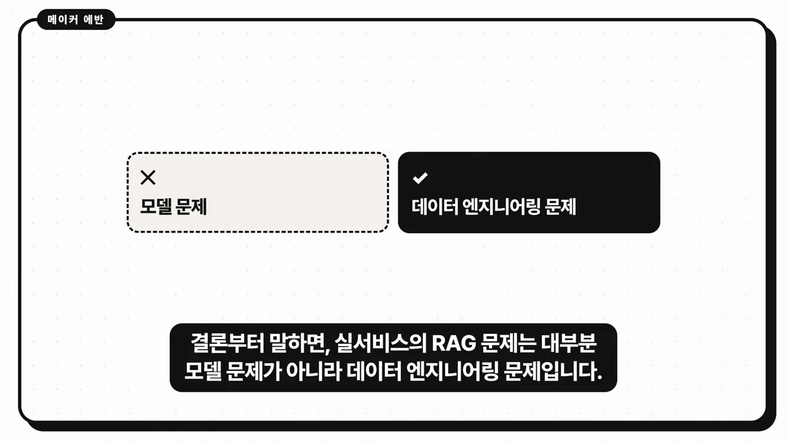
30분짜리 데모의 5단계
데모는 여러 장의 슬라이드에 걸쳐 한 단계씩 나와요. 한 장으로 모으면 이래요. 앞의 세 단계는 문서를 넣는 쪽이고, 뒤의 두 단계는 질문에 답하는 쪽이에요. 화면에서는 가장 가까운 청크를 3개 뽑아요.
데모가 잘 도는 건 숨은 가정 세 가지 덕분이에요. 문서가 바뀌지 않고, 지워지지 않고, 누가 보면 안 되는 문서도 없다는 거예요. 아래 슬라이드는 회사에서 이 셋이 각각 '매일 바뀐다', '지워진다', '부서마다 다르다'로 뒤집힌다고 정리해요.
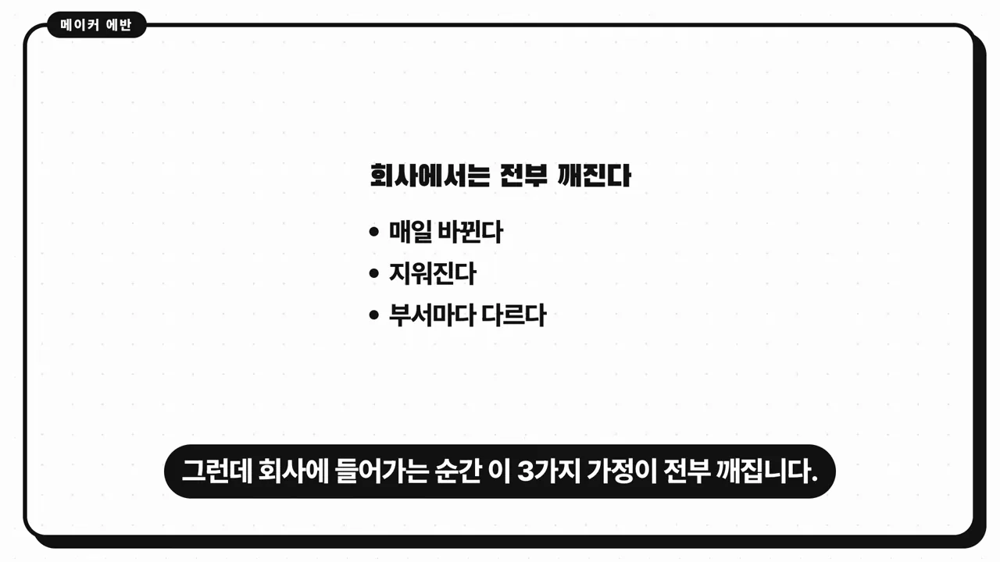
1·2번 질문: 최신 버전과 증분 동기화
원문 글은 다섯 가지 질문을 던져요. 영상은 질문마다 실제로 어떻게 터지는지, 어떻게 막는지를 차례로 봐요. 슬라이드의 체크리스트가 이 문서의 2~4절 순서와 같아요.
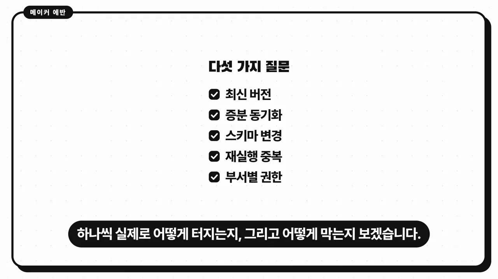
1번: 같은 문서가 세 번 개정됐다면
데모 방식대로 새 파일을 그냥 다시 넣으면 옛 버전이 지워지지 않아요. 아래 막대를 보면 v1 청크 40개, v2 청크 42개, 최신 v3 청크 41개가 벡터 DB(Database)에 함께 들어 있어요.
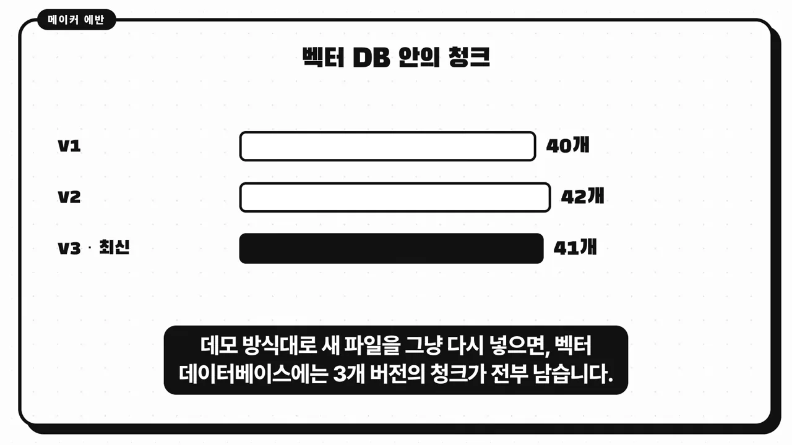
이건 프롬프트를 고쳐서는 안 막혀요. 막는 방법은 데이터 모델링이에요. 아래 문서 테이블은 같은 문서 A-17의 v3 행과 v2 행을 보여 줘요. 오른쪽 is_latest 열에 테두리가 쳐져 있고, v3만 true예요.
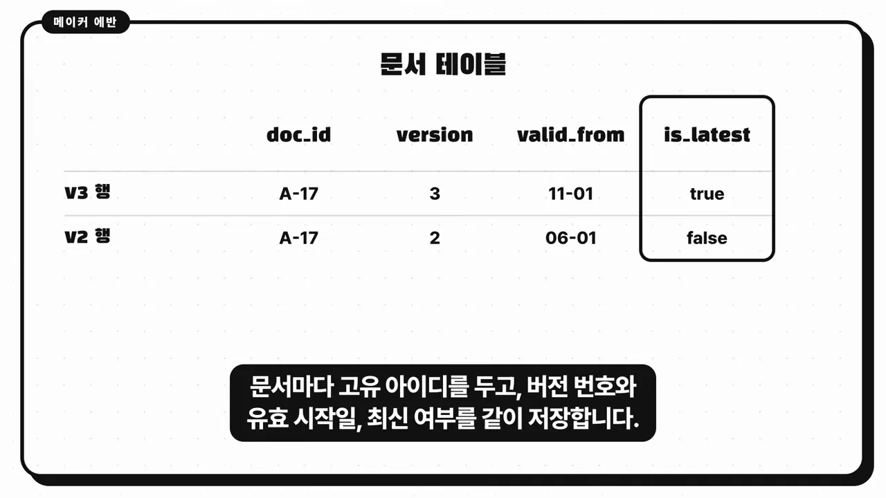
화자는 이걸 데이터 웨어하우스에서 오래 써 온 이력 관리 방식이라고 설명해요. 답변에 '규정 A-17 · v3 · 12쪽'처럼 어느 버전의 몇 쪽을 근거로 썼는지 같이 보여 주면, 사용자도 옛 문서인지 바로 확인할 수 있어요. RAG를 만든다는 건 이 이력 관리를 벡터 쪽에도 똑같이 한다는 뜻이에요.
2번: 새 데이터는 언제 들어오나
문서가 1천 개쯤이면 매일 밤 전체를 다시 넣는 게 정답이에요. 수십만 개가 되면 매번 다시 임베딩하는 비용과 시간을 감당할 수 없어서, 바뀐 것만 가져오는 증분 적재를 써요. 보통 수정 시각 컬럼을 기준으로 지난번 적재 이후 바뀐 행만 읽어요.
여기에 함정이 있어요. 아래 표에서 추가와 수정은 O로 잡히지만, 테두리 친 삭제 칸만 '안 잡힘'이에요. 행이 지워지면 수정 시각을 남길 행 자체가 없기 때문이에요.
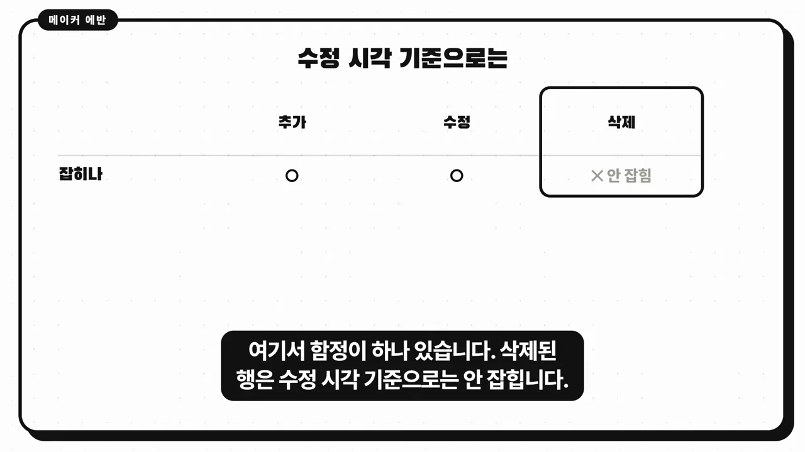
CDC는 추가, 수정, 삭제를 전부 이벤트로 흘려보내요. 그리고 동기화 주기는 기술이 아니라 업무가 정해요. 아래 표는 허용 지연을 두 가지로 나눠요. 사내 규정은 하루, 테두리 친 재고·가격은 5분 이내예요.
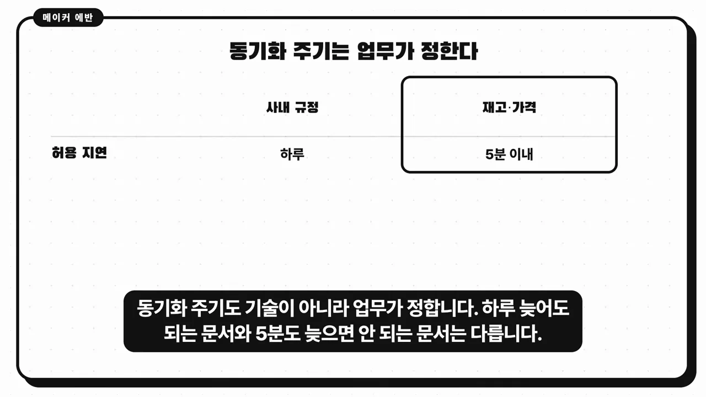
3·4번 질문: 스키마 변경과 재실행 중복
3번: 컬럼 구조가 갑자기 바뀌었다면
화자는 이게 실제로 가장 자주 일어나는 장애라고 해요. 원본 팀이 컬럼 이름이나 날짜 형식을 바꾸거나, 컬럼 하나를 지워요. 더 나쁜 건 파이프라인이 멈추지 않고 그대로 도는 경우예요. 아래 슬라이드는 그 흐름을 세 칸으로 보여 줘요. 본문 컬럼이 비어 있으면, 빈 청크가 임베딩되고, 마지막 검은 칸에서 품질이 조용히 떨어져요.
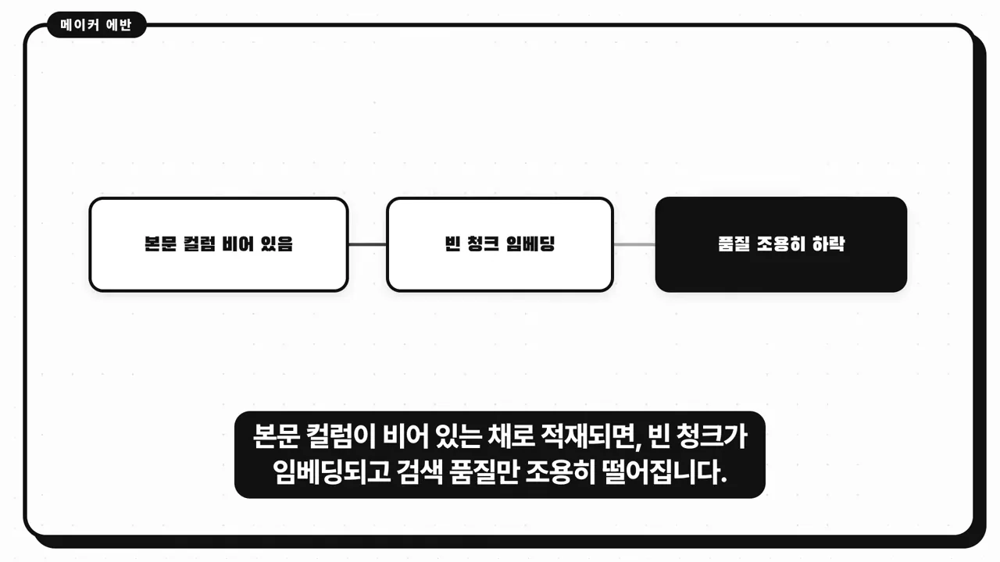
그래서 원칙은 하나예요. 조용히 틀리느니 시끄럽게 멈춰야 해요. 적재 단계에서 스키마를 검사하고, 필수 컬럼이 비면 실패로 처리해요. dbt는 이런 검사를 테스트로 적어 둘 수 있게 해 줘요. 화면의 예시는 세 줄이에요.
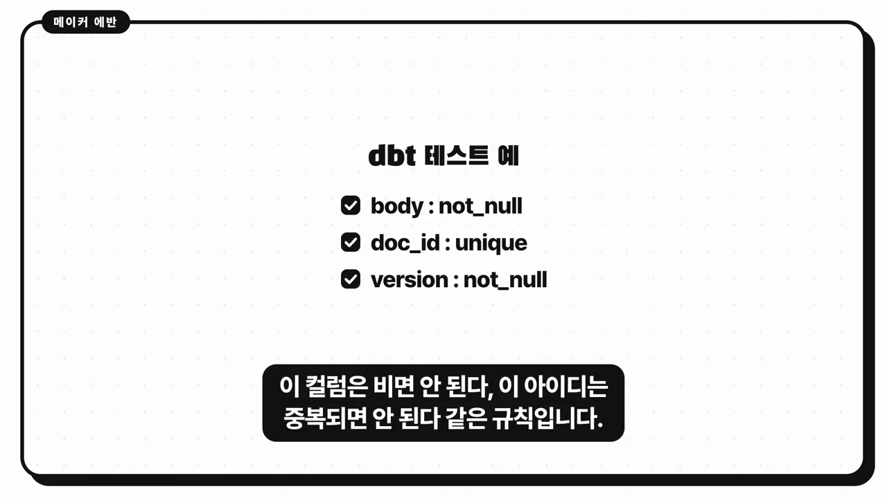
원본 팀과 컬럼 이름과 형식을 미리 약속해 두는 걸 데이터 계약이라고 불러요. 모델이 아무리 좋아도 비어 있는 컬럼에서 정답을 만들어 낼 수는 없어요.
4번: 동기화가 중간에 끊겼다면
데모 코드는 대부분 그냥 INSERT만 해요. 작업이 절반쯤에서 끊긴 뒤 다시 돌리면, 앞에서 성공한 절반이 한 번 더 들어가 같은 청크가 두 개씩 생겨요. 아래 슬라이드의 검색 상위 3개를 보면 1위 '청크 A' 뒤로 2위와 3위가 모두 '청크 A 중복'이에요.
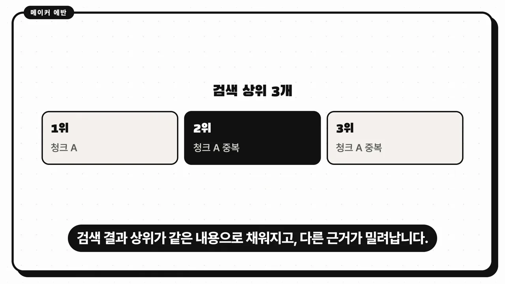
여기서 필요한 개념이 멱등성이에요. 같은 작업을 몇 번 다시 돌려도 결과가 한 번 돌린 것과 같아야 해요. 방법은 청크마다 정해진 아이디를 주는 거예요. 화면에는 그 재료가 'doc_id · version · 순번'으로 적혀 있어요.
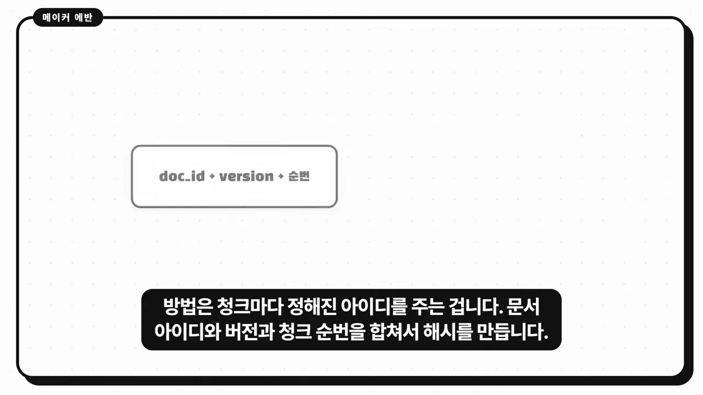
그리고 INSERT 대신 업서트를 써요. 같은 아이디가 있으면 덮어쓰고, 없으면 새로 넣어요. 화자는 Postgres라면 ON CONFLICT 구문 하나로 되고, 벡터 DB도 대부분 같은 아이디로 다시 쓰면 덮어쓰는 업서트를 지원한다고 해요. 작업을 문서 단위로 쪼개고 어디까지 끝났는지 체크포인트를 남기면, 끊긴 지점부터 다시 시작할 수 있어요. 재실행이 안전해야 새벽에 실패한 작업을 아침에 마음 편히 다시 돌릴 수 있어요.
5번 질문: 부서마다 볼 수 있는 문서가 달라요
화자는 다섯 번째 질문이 제일 무섭다고 해요. 데모에서는 모든 문서가 컬렉션 하나에 들어 있어요. 그러면 신입 사원이 질문해도 민감한 문서가 근거로 뽑힐 수 있어요. 아래 카드 세 장 중 검은 카드가 'HR 전용' 인사 평가, 가운데가 '영업 임원 전용' 계약 단가예요. 신입이 봐도 되는 건 '전체 공개'인 휴가 규정 하나뿐이에요.
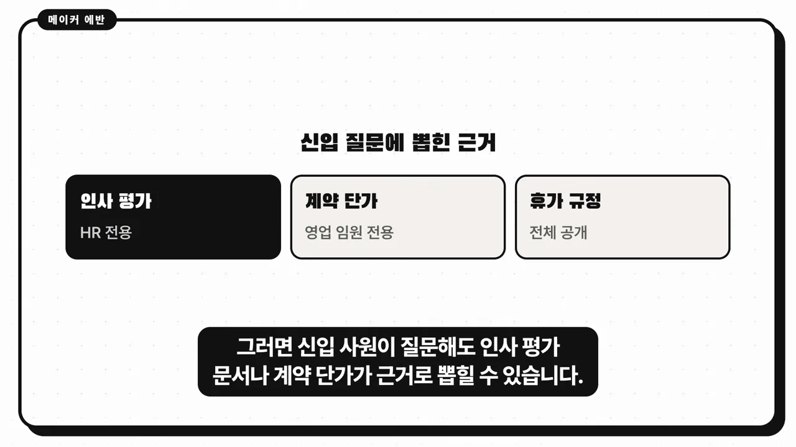
프롬프트에 '이 사람은 영업팀이니 인사 문서는 쓰지 마라'라고 적는 건 방어가 아니에요. 이미 검색해서 모델에 넘긴 순간 내용은 노출된 거예요. 아래 슬라이드는 이걸 두 칸으로 대비해요. 왼쪽 '생성 단계에서 거르기'는 X, 오른쪽 '검색 단계에서 거르기'는 체크예요.
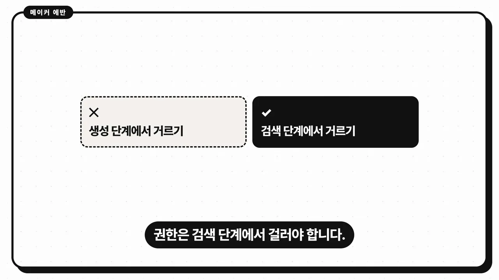
방법은 이래요. 청크를 만들 때 원본 문서의 접근 권한 목록을 메타데이터로 같이 저장해요. 검색할 때는 질문한 사람의 부서와 직급으로 필터를 걸고 그 안에서만 찾아요. Postgres의 행 수준 보안을 쓰면 데이터베이스가 이 규칙을 강제해요.
끝이 아니에요. 원본 시스템에서 권한이 바뀌면 그 변경도 검색 쪽에 동기화돼야 해요. 퇴사자 권한이 검색에만 남아 있는 사고는 생각보다 흔하다고 해요. 그래서 아래 체크리스트처럼 권한도 하나의 파이프라인으로 다뤄요. 동기화 주기, 실패 알림, 그리고 문서와 같은 대우예요.
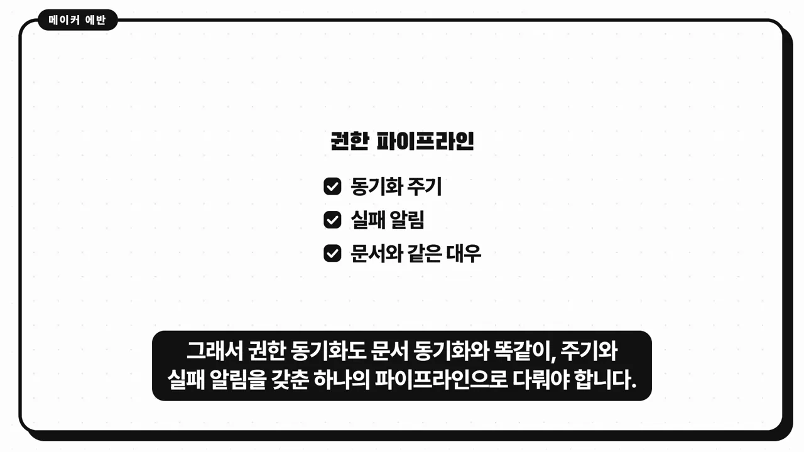
도구는 각자 다른 문제를 풀어요
다섯 문제를 보고 나면 원문이 소개한 2026년 데이터 엔지니어링 로드맵이 왜 그렇게 긴지 이해돼요. 아래 슬라이드에는 Python, SQL, Git, Airflow, Spark 카드가 보이고, 화자는 여기에 Linux, 데이터 모델링, ETL(Extract, Transform, Load), Kafka, 레이크하우스까지 이어진다고 말해요.
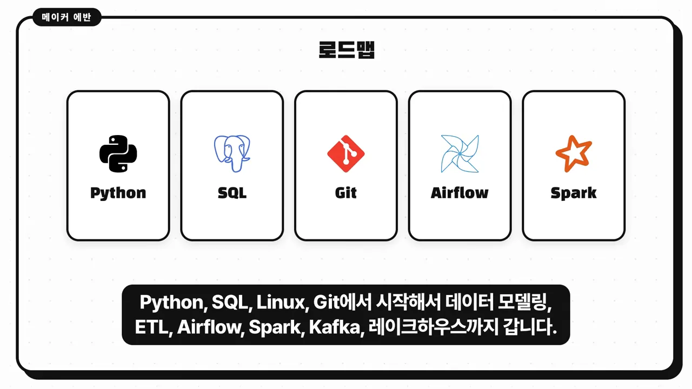
영상은 이 도구들이 각각 어떤 문제를 푸는지 한 줄씩 설명해요. 같은 종류의 도구가 아니라는 게 요점이에요.
| 도구 | 푸는 문제 |
|---|---|
| ETL / ELT(Extract, Load, Transform) | 데이터를 뽑고, 바꾸고, 싣는 순서예요. 요즘은 원본을 웨어하우스에 먼저 싣고 안에서 변환하는 ELT가 많아요 |
| Airflow | 작업을 순서대로, 정해진 시간에, 실패하면 재시도하며 돌리는 스케줄러예요 |
| Spark | 한 대로는 안 되는 대용량 계산을 여러 대에 나눠 처리해요 |
| Kafka | 계속 생기는 이벤트를 순서와 함께 저장하고, 여러 소비자가 각자 읽어 가게 해요 |
| dbt | DB 안의 변환 로직을 SQL 파일로 정리하고 테스트를 붙여요 |
| Snowflake, Databricks | 레이크하우스예요. 저장과 계산을 한곳에서 관리해요 |
슬라이드도 같은 말을 표 한 줄로 줄여요. Airflow 아래는 '순서·재시도', Spark 아래는 '대용량 계산', Kafka 아래는 '이벤트 전달'이에요.
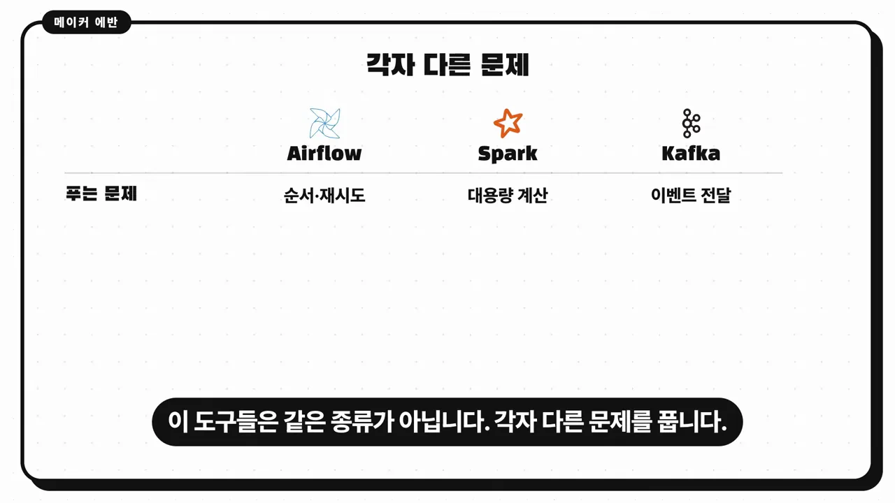
반대쪽 이야기: 과설계가 더 위험해요
원문 작성자도 많은 사람이 저지르는 실수를 짚어요. Python 스크립트 하나와 Postgres로 풀 수 있는 문제인데, 아래 카드의 Kafka, Spark, Kubernetes부터 세우는 거예요.
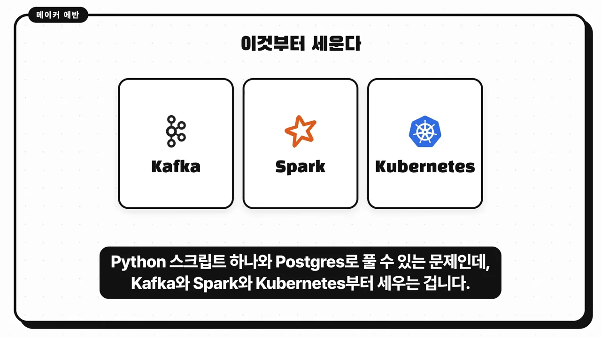
결과는 아래 막대 두 개로 나와요. 운영할 사람은 1명인데 관리할 클러스터는 3개예요.
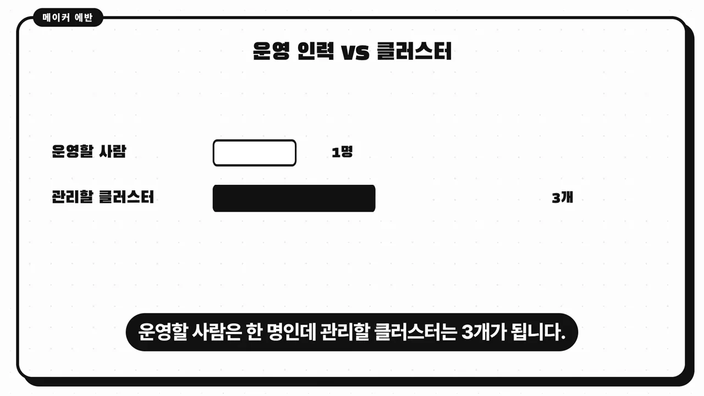
화자의 경험으로는 사내 RAG 대부분이 문서 수만 개 수준이에요. 이 규모면 Postgres에 pgvector 확장 하나, 크론으로 도는 Python 증분 적재 하나로 충분하다고 해요. 화면에는 pgvector의 GitHub 저장소가 떠 있어요.
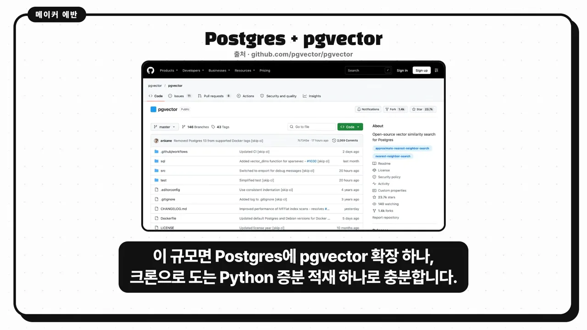
그럼 다른 도구는 언제 들일까요? 영상은 기준을 도구 이름이 아니라 실제로 겪는 문제로 잡아요.
| 도구 | 들이는 때 |
|---|---|
| Airflow | 작업이 10개를 넘고 서로 순서가 얽힐 때 |
| Kafka | 초 단위로 반영돼야 하는 이벤트가 실제로 있을 때 |
| Spark | 한 대의 메모리로 계산이 안 끝날 때 |
도구를 하나 들일 때마다 모니터링, 업그레이드, 장애 대응까지 같이 들어온다는 걸 계산에 넣어야 해요. 배울 건 도구를 쌓는 법이 아니라 각 도구가 무엇을 풀고 언제 필요해지는지예요.
AI가 코드를 써 줘도 직접 알아야 할 다섯 가지
요즘은 AI가 SQL도 ETL 스크립트도 써 주는데 이걸 다 알아야 하느냐는 반론이 나와요. 화자는 맞다고 인정하면서도, 모델이 정할 수 없는 게 있다고 해요. '매출' 필드가 부가세를 포함하는지, 환불을 빼는지 같은 정의예요. 어느 데이터가 믿을 만한지, 어느 시스템이 원본인지, 증분 적재를 어떤 조건에서 돌릴지도 업무를 알아야 정할 수 있어요.
에이전트가 업무 시스템에 붙으면 이 문제가 더 커져요. 아래 슬라이드는 둘을 나란히 놓아요. 사람은 '이상하면 멈춘다', 에이전트는 '그대로 넘긴다'예요.
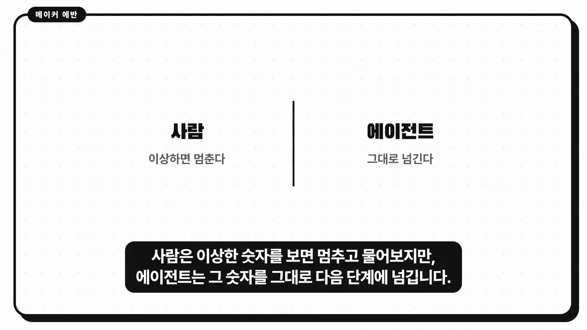
에이전트는 스스로 계획을 세우고, MCP 도구를 수십 개 부르고, 여러 시스템에 접근해요. 그런데 아래 데이터에 세 가지 문제가 있다면요. 슬라이드의 세 알약이 '품질 나쁨', '정의 제각각', '권한 엉망'이에요.
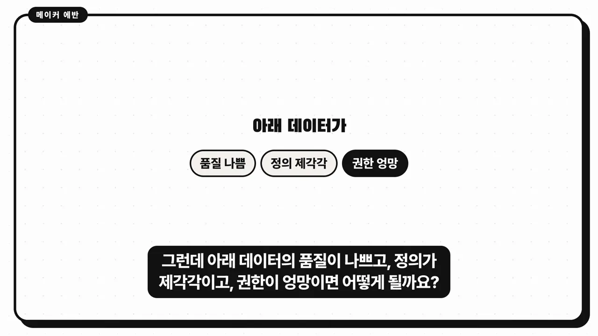
화자는 원문 표현을 빌려, 그건 믿을 수 없는 시스템을 더 효율적으로 돌리는 것뿐이라고 해요.
최소한 직접 할 줄 알아야 할 다섯 가지
그렇다고 FDE(Forward Deployed Engineer)나 AI 엔지니어가 빅데이터 플랫폼 전문가가 될 필요는 없어요. FDE는 고객 현장에 들어가 직접 시스템을 붙이는 엔지니어예요. Spark, Kafka, Snowflake를 다 배운 다음에 엔터프라이즈 프로젝트를 시작할 필요도 없다고 해요. 대신 화자는 이 다섯 가지를 꼽아요. 영상은 이걸 1~5번 모듈 카드로 한 장씩 보여 줘요.
| 카드 | 직접 할 수 있어야 하는 것 | 막아 주는 질문 |
|---|---|---|
| 1 · SQL | 조인과 집계를 막힘없이 쓰기 | 전체의 바탕 |
| 2 · 테이블 설계 | 문서, 버전, 권한을 담는 테이블을 직접 설계하기 | 최신 버전, 부서별 권한 |
| 3 · 증분 적재 | 바뀐 것만 가져오는 증분 적재와 업서트 짜기 | 증분 동기화, 재실행 중복 |
| 4 · 테스트 | 필수 컬럼과 중복을 검사하는 테스트 붙이기 | 스키마 변경 |
| 5 · 복구 | 실패하면 알림이 오고 끊긴 지점부터 다시 돌리게 만들기 | 재실행 중복, 권한 동기화 |
세 번째 열은 영상에서 앞서 다룬 질문과 이어 본 거예요. 영상이 직접 짝지어 주지는 않지만, 각 카드의 내용이 앞 절의 해법과 그대로 겹쳐요.
이 다섯 가지를 Claude Code에 맡길 수는 있어요. 다만 아래 슬라이드처럼 'Claude Code 작성' 다음에는 '내가 검토' 칸이 붙어요.
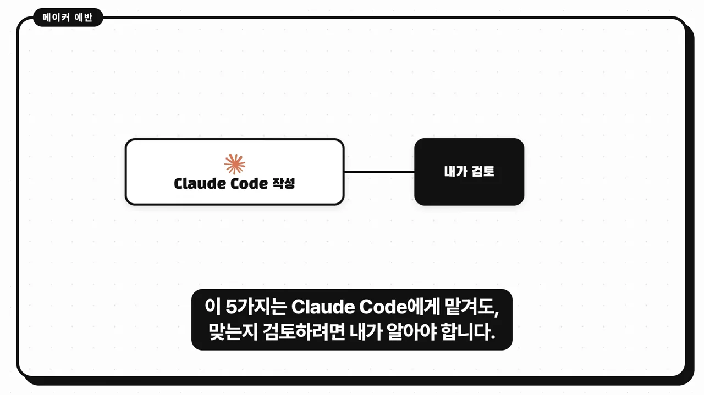
정리
RAG 데모는 30분이면 되지만, 실서비스는 데이터가 바뀌고 지워지고 권한이 갈리는 순간부터 시작돼요. 최신 버전, 증분 동기화, 스키마 변경, 재실행 중복, 부서별 권한은 전부 데이터 엔지니어링 문제예요. 도구 쪽 결론은 아래 슬라이드 한 장이에요. '문제 없이 도입'은 X, '문제가 있을 때 도입'은 체크예요.
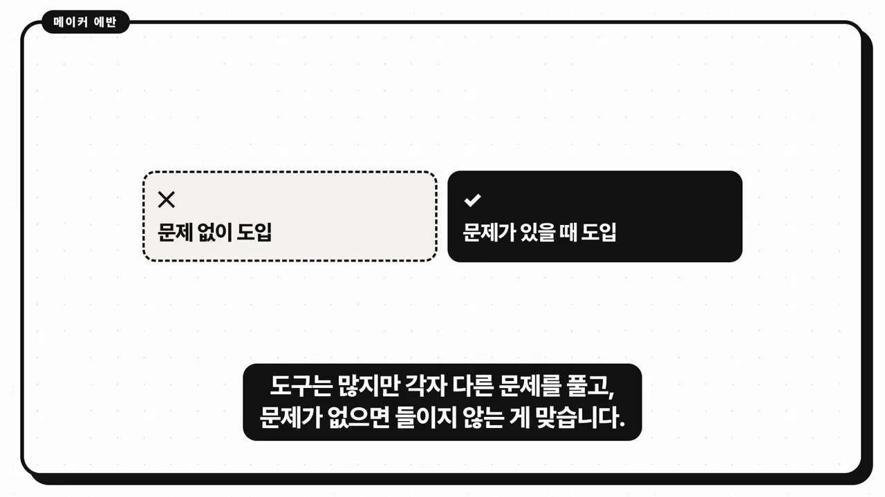
AI 시대에 오래 쌓을 가치가 있는 능력은 특정 프레임워크가 아니라, 데이터와 모델과 도구와 업무를 실제로 잇는 능력입니다.
— 영상 10:30